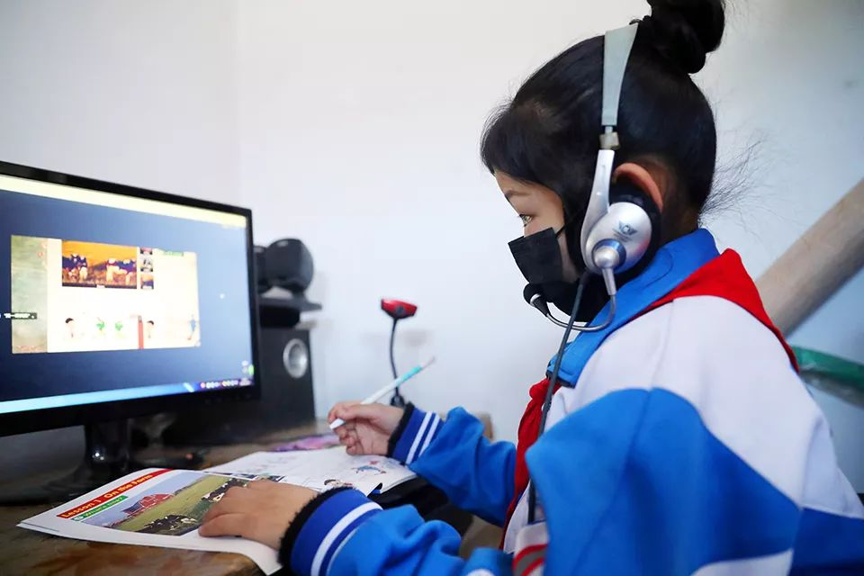

复工第一天： “花式办公”的员工，等待复苏的城市
原文链接 备份链接 *************▲*************广州街头，戴着口罩的行人。 （麦圈/图） 全文共2050字，阅读大约需要5分钟。 一场突如其来的疫情，给中国人带来近十年来最长的一个春节假期。随着2月10日的复 …


*************▲ *************2月10日，在太行山深处的河北石家庄市井陉县北良都村，北良都小学一名学生在家中利用网络听课学习。 （新华社 张秀科/图）
全文共3875字，阅读大约需要8分钟。
“企业微信”显示，全国处理消息最繁忙的行业是教育、医疗和政府。
对于阿里和腾讯来说，看上去是“钉钉”和“企业微信”的较量，背后其实是阿里云和腾讯云的比拼。
“我们一直在想5G将会以什么方式到来，但是没想到会是这种方式。”
本文首发于南方周末 未经授权 不得转载
文 | 南方周末记者 周小铃 刘诗洋
责任编辑 | 张玥
2020年春节的节后复工，比往年晚了。
早在2020年1月27日，国务院就宣布延长春节假期，随后各地政府逐步跟进，大部分省市将复工时间定在了2月10日。
2月10日上午8点，早高峰时段，首都北京的交通广播罕见地通报全城畅通。
国贸东三环桥，司机们踩油门的右脚多少会有点不适应——这个限速80km的路口平时连一半速度都达不到，现在稍不注意就会超速。
东三环桥下的北京国贸CBD，仍在疫情中沉睡。因为没有车流，路口的红灯显得时间过长。人流最密集的大北窑公交站和国贸地铁人烟稀少。写字楼一改往日的热闹，仅有的几个白领在前台测量体温后，不想多停留一分钟。
也许是因为SARS时期的恐慌。在北京工作的人似乎对复工更为保守，从依旧冷清的北京国贸再向北30公里，平日里码农遍地的中关村软件园也还在沉睡。2月10日中午12点，往日车流不息的腾讯总部门前只有几个保安驻守，旁边的网易、新浪、联想也是一片冷清。
中关村软件园里以往最热闹的咖啡店和吸烟处，只有寥寥数人。在这片区域工作三年，换了四家公司的程序员于然告诉南方周末记者，他的工作完全可以在家里完成，在疫情彻底过去之前，哪怕被辞退他也不会去上班。
事实上，相比于中小企业，互联网巨头们的复工计划已算相当人性化。百度、搜狐、美团等多家大型互联网公司的员工告诉南方周末记者，他们本周仍以网络办公为主，返岗日期都推迟了17号以后，而腾讯和今日头条，则直接把假期延长到了2月24号。
据58同城招聘近期发布的《2020年疫情对企业复工与招聘影响调研报告》显示，47%的企业将在2月10日复工。15%的企业在2月10日以后复工，仍有27%的企业(截至2月5日统计)还未确定复工时间。
在采取延时复工的企业中，55%企业采取在家办公方式;32%企业休假，有工作响应即可;13%的企业正常休假。这表明，绝大部分企业采取了线上灵活办公方式，而根据58同城招聘调研数据显示，在家办公的企业中，51%属于IT、通信、电子及互联网行业。
很多受访者对南方周末记者表示，在家办公虽然不用上下班通勤、打卡，但也没有了下班时间，随时在岗。
而以阿里巴巴、腾讯为主的线上办公软件服务提供方则普遍发现，客户需求是平时的10倍不止，要维持体系稳定运转“，是一笔天价的开支”。
1
春节期间，家住山东的孙茜先后收到两条来自公司的开工短信，她供职于深圳南山区的一家科技制造业公司。短信通知，返岗时间从2月3日推迟到2月10日。
开工前，孙茜刷着网络上源源不断的疫情信息，心里止不住地难过，她担心返岗后员工聚集，自己的安全无法得到保证。根据深圳市卫生监督局的通报，2020年2月3日0时至12时，深圳市新冠肺炎累计确诊245例。其中南山区确诊病例最多，达到50例。
但其实对于孙茜来说，推迟返岗并不等于放假。她的团队领导提
出，这一周内要“在家办公”，大家通过“企业微信”App召开线上会议。
孙茜告诉南方周末记者，从早上九点开始，她就一直坐在电脑前办公，爸妈把饭端到电脑桌前，都没顾上吃一口，“活就这么多，哪有可能‘摸鱼’?”
姚辛在中国移动某分公司旗下的一家互联网公司工作，公司1200多人仅200人需按时返岗，其余员工则线上办公。
姚辛的老家在山西阳泉市，每逢过年，村里老小都会参与新年表演，儿时好友聚会聊天。而今年，姚辛在大年初一就已经在线上忙着给公司报送疫情进展、员工健康情况等各类信息，有时甚至会忙到凌晨。
“这次在家办公，爸妈都体会到了我工作的辛苦。”他笑着说。
由于不在公司，领导们的电话来得更频繁。姚辛的手指一直在键盘和手机之间转换，打字的同时还得接听领导电话，回复办公进度。“有时候，见面两三句话就能说清楚的事，发微信却说不清楚，急事只能打电话。”
往常，9点上班，姚辛总会在8:30之前坐在工位上。在家办公后，姚辛只需要保证在开会时按时接听语音电话就行“，语音会议的好处就是你躺着、站着、坐着怎么接都行”。姚辛告诉南方周末记者，线上办公的监督不到位，效率完全看个人。对于单身员工而言，姚辛省去了很多家庭劳务琐事，但对有家庭的员工而言，家务、孩子多少会分
散注意力，“非正式的小组会议里，有时候能听到电话里有孩子问作业、说话的声音”。
姚辛也注意到，自从线上办公以后，虽然省去了通勤的时间，午休也可以躺在自家床上，但也没了上下班和周末的概念，没做完的事情该做还得加班加点做，原先的8小时工作制变成了随时随地“在线”。
2
多位互联网行业的从业者告诉南方周末记者，他们能较快适应线上办公的节奏，因为平常也总是线上协同办公。一位做新媒体的女孩说，现在反而能把以前早上通勤的时间省出来，在家做做运动、准备个营养早餐。
相比而言，挑战更大的是习惯于面对面工作的行业，比如学校。
2月10日，“上网课的尴尬”登上微博热搜。在教育部“停课不停学”的号召下，多地中小学陆续开始通过网络复课，各地的人民教师们将三尺讲台从课堂搬到了直播间，学生则坐在家中通过iPad、电脑在线观看网络课程。
蔡庭是海南某中学的一名教师，她在朋友圈里“抱怨”自己复工的第一天是在更换不同的直播软件中度过的。更换软件后基本能够保障课程流畅，“但课堂效果肯定是没法保障的”。
她回忆，2月10日首次线上课程，频频遇到软件崩溃，甚至老师和学生们一起盯了一上午的视频白板。软件客服只好向用户发送致歉信息：“两亿人同时在线，对整个行业来说还是第一次。”
不同于中、小学教师们的手忙脚乱，校外教育机构早就做好了网络授课的准备。
2月3日晚，广东一家高中培训机构的老师徐彬，收到了公司行政人员规划的网课时间表，计划表中清晰地写好了各科老师的讲课时间及直播房间号。
由于以前是小班教学，线上开课的方式对徐彬来说更简单。他利用软件跟同学共享屏幕，通过语音与学生互动，完成教学任务。由于看不到学生的真实情况，徐彬判断，线上的教学效率跟线下比肯定会差一点。
阿里巴巴旗下办公软件“钉钉”的工作人员向南方周末记者介绍，抗疫期间，钉钉平台来自教育行业的用户量明显增多，钉钉的视频会议、群直播（在线课堂）以及员工健康智能日报等功能在疫情期间使用频率普遍较高。目前，钉钉直播的老师有六十多万，学生有几千万人同时在线。
根据腾讯方面“企业微信”公布的数据来看，线上复工以后，最爱使用线上会议的城市是北京、深圳、上海、广州；线上开会时间最长的省份是江苏、浙江、山东；使用群主播进行线上培训最多的省份是广东、河北、河南；而处理消息最繁忙的行业是教育、医疗和政府。
腾讯集团市场和公关部相关负责人周豫也告诉南方周末记者，就腾讯内部而言，员工工作节奏与往常一样，团队、上下级以微信、企业微信和腾讯会议等远程办公产品沟通。有些产品团队在春节一直没有休息。1月20日开始，主动加入这场“战疫”的腾讯团队越来越多，最多时，腾讯内部同时接入远程办公的员工就超过三万人。
3
突然而来的“在家办公”，手忙脚乱的不仅是白领们，还有线上服务的技术提供商。对于阿里和腾讯来说，看上去是“钉钉”和“企业微信”的较量，背后其实是阿里云和腾讯云的比拼。
“企业微信”提供的数据显示，2月10日上午，它迎来最强大的一波开工、上课需求，服务器请求上涨超过10倍。当天，企业微信还专门为教育行业升级“群直播”的功能。此外，为了保证软件能够正常运转，会议产品“腾讯会议”从1月29日到2月6日，8天扩容了超100万核，足以支持全球5000万人同时在线开会。
阿里“钉钉”的工作人员则透露，为了确保网络通畅，技术人员连续两天在“阿里云”上紧急扩容网络和计算资源，利用弹性计算资源编排服务（ROS）迅速新增部署了两万台云服务器，24小时值班保系统稳定，以支撑用户暴增的需求，最大能支持302人同时进入会议。这一切的背后，“这是一笔天价的开支”，提供给用户都是免费的。
据公开资料，这几天，“钉钉”的下载数量在苹果商城居高不下。“钉钉”于2014年筹备开发，2015年1月正式运营。早期是针对中小企业提供的一种“共创”模式，解决中小企业内部沟通、协同办公的问题。随后，钉钉用户逐渐扩展，目前已基本覆盖全行业。
而“企业微信”最早则是为了企业内部的连接，同时，日常办公场景的需求和痛点也是众多企业面临的共同问题。截至2019年，“企业微信”在医药、保险、汽车、银行、能源等行业的Top10企业的覆盖率平均达80%以上。
据南方周末记者不完全统计，目前有14款产品为疫情期间的线上办公提供服务，在此次疫情期间，各款软件都给出相应的免费权益，目前仅有阿里钉钉和企业微信全部免费。
“哪怕没有这次疫情，移动办公和远程协同也会是未来不可避免的趋势。”阿里钉钉工作人员说。
无论是线上办公，还是在线教育，都在这次的疫情中发现了新的机遇。姚辛所在的公司正积极推动5G时代到来，通过5G无线高速通信传输技术，让传输速率更高，网络时延更低，通讯容量更大，跨域沟通、协同办公将更加轻而易举。
“我们一直在想5G将会以什么方式到来，但是没想到会是这种方式。”姚辛感叹道。
（应受访者要求，孙茜、姚辛、蔡庭、徐彬为化名）


原文链接 备份链接 *************▲*************广州街头，戴着口罩的行人。 （麦圈/图） 全文共2050字，阅读大约需要5分钟。 一场突如其来的疫情，给中国人带来近十年来最长的一个春节假期。随着2月10日的复 …
原文链接 备份链接 _ “不知道那些曾经一起抢出站闸机的人，现在正在遭遇什么？只希望这场疫情早点儿过去。” _ 文 |《财经》记者 王丽娜 袁满 编辑 | 朱弢 疫情之下，每个人的生活都有变化。即便是距离疫情爆发中心武汉千里之外的北京。 …
原文链接 备份链接 _ “不知道那些曾经一起抢出站闸机的人，现在正在遭遇什么？只希望这场疫情早点儿过去。” _ 文 |《财经》记者 王丽娜 袁满 编辑 | 朱弢 疫情之下，每个人的生活都有变化。即便是距离疫情爆发中心武汉千里之外的北京。 …
原文链接 备份链接 地铁北京南站，拍摄：蔡星卓 记者：唐俊 “ 绝大部分城市地铁客流不足去年同期10%。 ” 受疫情影响，今年春运没有返程高峰。从1月29日开始，全国铁路、民航、公路客流同比降幅一直超过80%。虽然政策已经允许复工，但实际 …
原文链接 备份链接 封面报道之产业篇： 仙桃：口罩生产过山车 | 荆门：消毒剂企业难复工 | 神农架：10名患者现林区 “为了家人的健康，我肯定不希望东风复工。但东风是把我从小养大的地方，这么停产下去肯定对东风损失很大，我也不希望它垮 …